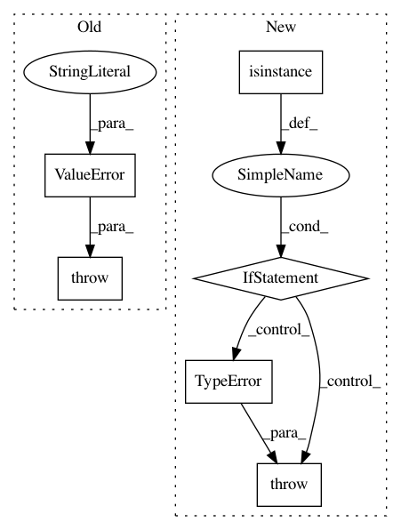

5dd8c5c10ccc286a67ba4846a81701207b606e0d,keras/layers/convolutional.py,ZeroPadding2D,__init__,#ZeroPadding2D#Any#Any#,1501
Before Change
self.left_pad = padding.get("left_pad", 0)
self.right_pad = padding.get("right_pad", 0)
else:
raise ValueError("Unexpected key is found in the padding argument. "
"Keys have to be in {"top_pad", "bottom_pad", "left_pad", "right_pad"}")
except AttributeError:
padding = tuple(padding)
if len(padding) == 2:
self.top_pad = padding[0]
After Change
dim_ordering = K.image_dim_ordering()
self.padding = padding
if isinstance(padding, dict):
if set(padding.keys()) <= {"top_pad", "bottom_pad", "left_pad", "right_pad"}:
self.top_pad = padding.get("top_pad", 0)
self.bottom_pad = padding.get("bottom_pad", 0)
self.left_pad = padding.get("left_pad", 0)
self.right_pad = padding.get("right_pad", 0)
else:
raise ValueError("Unexpected key found in `padding` dictionary. "
"Keys have to be in {"top_pad", "bottom_pad", "
""left_pad", "right_pad"}."
"Found: " + str(padding.keys()))
else:
padding = tuple(padding)
if len(padding) == 2:
self.top_pad = padding[0]
self.bottom_pad = padding[0]
self.left_pad = padding[1]
self.right_pad = padding[1]
elif len(padding) == 4:
self.top_pad = padding[0]
self.bottom_pad = padding[1]
self.left_pad = padding[2]
self.right_pad = padding[3]
else:
raise TypeError("`padding` should be tuple of int "
"of length 2 or 4, or dict. "
"Found: " + str(padding))
assert dim_ordering in {"tf", "th"}, "`dim_ordering` must be in {"tf", "th"}."
self.dim_ordering = dim_ordering
self.input_spec = [InputSpec(ndim=4)]
In pattern: SUPERPATTERN
Frequency: 3
Non-data size: 6
Instances
Project Name: keras-team/keras
Commit Name: 5dd8c5c10ccc286a67ba4846a81701207b606e0d
Time: 2016-10-12
Author: francois.chollet@gmail.com
File Name: keras/layers/convolutional.py
Class Name: ZeroPadding2D
Method Name: __init__
Project Name: ray-project/ray
Commit Name: 860eb6f13a0e570b95bd251eb53105473850cbdc
Time: 2020-05-24
Author: ed.nmi.oakes@gmail.com
File Name: python/ray/actor.py
Class Name: ActorClass
Method Name: _remote
Project Name: ray-project/ray
Commit Name: 6373c706615bc94c0a1e7fc564b3d18c3d342d91
Time: 2020-04-30
Author: ed.nmi.oakes@gmail.com
File Name: python/ray/serve/api.py
Class Name:
Method Name: create_backend